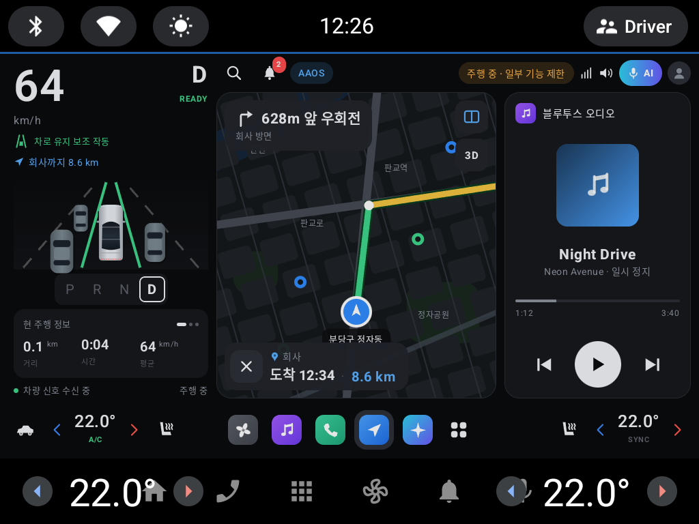
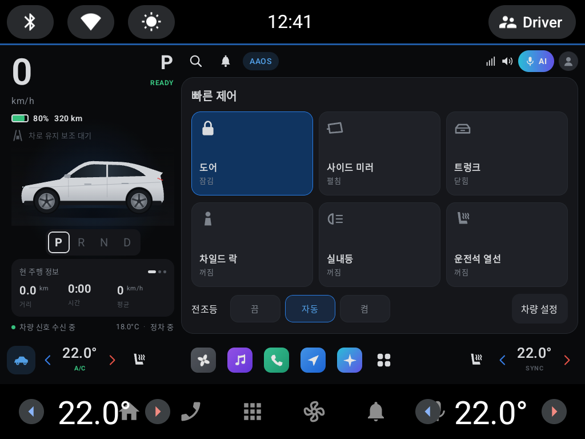

전 좌석 공조
온도, A/C, FULL(최대 냉방), AUTO, 풍량, 김서림, 좌석 열선을 CarProperty 신호로 읽고 씁니다.
AAOS 인포테인먼트 테스트 자동화
가상 차량 인포테인먼트 앱과, 그 앱을 UI 조작부터 VHAL 신호까지 E2E로 검증하는 테스트 환경입니다. 같은 테스트를 AAOS 에뮬레이터와 일반 Android 태블릿에서 그대로 돌립니다.

E2E 테스트
108개
AAOS 에뮬레이터 · 태블릿 공통
AAOS 에뮬레이터
106 통과
1 skipped · 1 xfailed · 6분 40초
두 기기 병렬
7분 20초
차례로 돌리면 14분 28초
불안정한 테스트
0개
재시도 · 격리 · 통계로 관리
화면
Kotlin과 Compose로 만든 IVI 앱입니다. 왼쪽 주행 정보, 위쪽 상태 바, 오른쪽 앱, 아래쪽 공조 바로 나뉘고, 공조, 도어 잠금, 주행 정보는 차량 신호와 연결돼 있습니다.
온도, A/C, FULL(최대 냉방), AUTO, 풍량, 김서림, 좌석 열선을 CarProperty 신호로 읽고 씁니다.

한 문장에 든 여러 명령을 처리하고, 어느 좌석에서 말했는지에 따라 동작합니다. 규칙 기반이고, 주행 중에는 일부 명령을 거절합니다.

주행 가능 거리, 배터리, 외기 온도, 도어 잠금을 보여 줍니다. 거리가 30 km 이하로 떨어지면 가까운 충전소를 안내합니다.

기어 신호가 R이 되면 모든 화면 위에 카메라 화면과 주차 가이드 선이 뜹니다.

주행 중에도 음악과 라디오는 쓸 수 있고, 영상은 막힙니다.

"운전석 온도 24도" 명령을 처리한 뒤 차량 공조 신호가 24.0°C인지 확인합니다.
기기
기기 종류는 자동으로 판별합니다. 기기에 CarService가 있으면 VHAL을, 없으면 앱 안의 Mock 차량 서비스를 씁니다.
에뮬레이터의 CarService와 VHAL을 씁니다. 신호를 넣고 화면을 보는 방향과, 화면을 누르고 신호를 읽는 방향을 모두 테스트합니다.
화웨이 태블릿에서는 Mock 차량 서비스를 씁니다. AAOS 전용 테스트 6개는 건너뜁니다.
진행 상황
공조와 도어 잠금을 VHAL 신호에 연결하고, 양방향 E2E 24개를 추가했습니다.
3영역 화면, 분할 화면, 하단 공조 바, AI 어시스턴트, 알림 센터.
내비게이션, 라디오, 전화, 설정, 후방 카메라, 음성 명령.
양산 IVI 구조를 참고한 디자인 개편, 회귀에서 찾은 결함 3건 수정.
재시도, flaky 판정, 격리, 통계, 두 기기 병렬 실행, GitHub Actions.
VHAL 값 주입과 Appium 세션 검증, Compose 앱, 기기 어댑터와 화면 객체.
실행
# ivi-tests 폴더에서 python -m venv .venv .venv\Scripts\python -m pip install -r requirements.txt # 빌드 게이트 .venv\Scripts\python -m pytest -m smoke # 두 기기 병렬 · 재시도 1회 .venv\Scripts\python tools\run_bench.py -m "smoke or sanity" --reruns 1